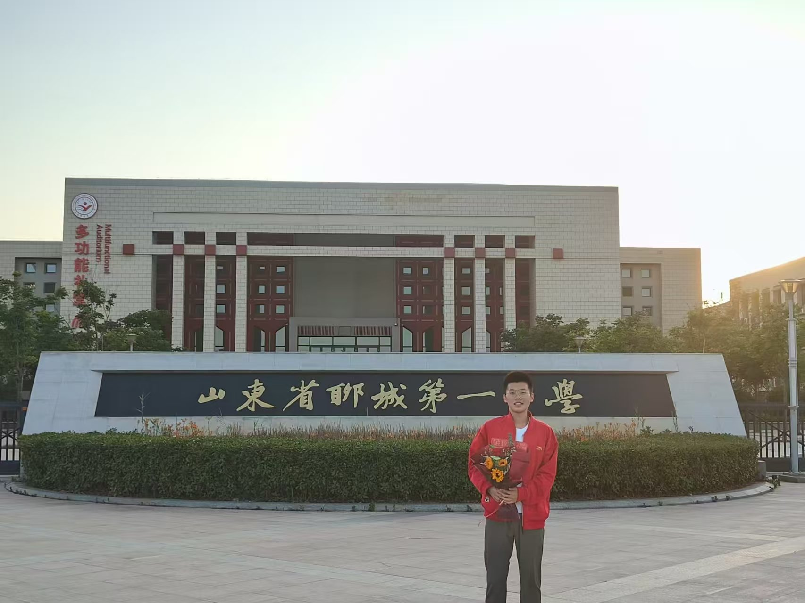

项目经历
基于点云神经网络的脑疾病纤维拓扑结构识别方法研究
2024年
进行中
参与
"智能驭行"--基于多模态增量学习的自动驾驶智能感知研究
2024年
优秀结题
主持
基于多模态融合的高空无人机轻量化目标检测与跟踪系统研究
2025年
进行中
主持
面向具身智能的视触觉持续学习及应用研究
2025年
进行中
参与
杭州西湖旅游活动对水质影响的量化分析与可持续策略研究
2025年
进行中
参与
草木含情，茶润身心
2025年
进行中
参与
荣誉及奖惩
🏆 竞赛奖项
💰 奖学金
🌟 荣誉称号
科研成果
发表论文
LDFA：Lightweight Dynamic Feature Aggregation for Multi-modal Fusion
SAE期刊论文 · 2024年8月 · 通讯作者
专利
一种基于计算机的图像处理去噪系统及方法
第三发明人 · 专利公开号：CN118840562A
软件著作权
机器加工视觉对位系统V1.0
登记号：2024SR2134060
所学课程
高等数学A1
大学物理A1
线性代数A1
数据结构与算法
计算机网络
人生时间轴
魔童降世
2005年2月
完成初步发育，开始地球Online
魔童降世
在2005年，我完成了初步发育，开始地球Online。
步入小学
2011年9月
小学学习开始
步入小学
在2005年，我完成了初步发育，开始地球Online。
高中毕业
2020年
完成高中学业，开始大学生活
高中毕业
在高中阶段，我专注于数学和物理的学习，为未来的计算机科学专业打下坚实基础。
进入大学
2021年
开始计算机科学与技术专业学习
大学生活开始
进入浙大城市学院，开始系统学习计算机科学知识，包括编程基础、数据结构等核心课程。
参与竞赛
2023年
开始参加各类学科竞赛
竞赛经历
参加数学建模竞赛、物理竞赛等，获得多项荣誉，提升了实践能力和团队协作能力。
项目开发
2024年
开始参与科研项目和软件开发
科研项目
参与国创项目，发表SAE期刊论文，获得软件著作权，在学术研究方面取得重要进展。
未来规划
2025年
继续深造，追求更高目标
展望未来
计划继续攻读研究生，深入研究人工智能和计算机视觉领域，为科技发展贡献力量。
研究生学习
2026年
开始研究生阶段的学习和研究
深造之路
进入研究生阶段，深入研究人工智能和计算机视觉领域的前沿技术。
学术研究
2027年
在学术研究领域取得重要突破
研究成果
在顶级期刊发表多篇论文，参与国际会议，与全球顶尖学者交流合作。
职业发展
2028年
开始职业生涯，为社会贡献力量
职场启程
进入知名企业或研究机构，将所学知识应用到实际工作中，推动科技进步。